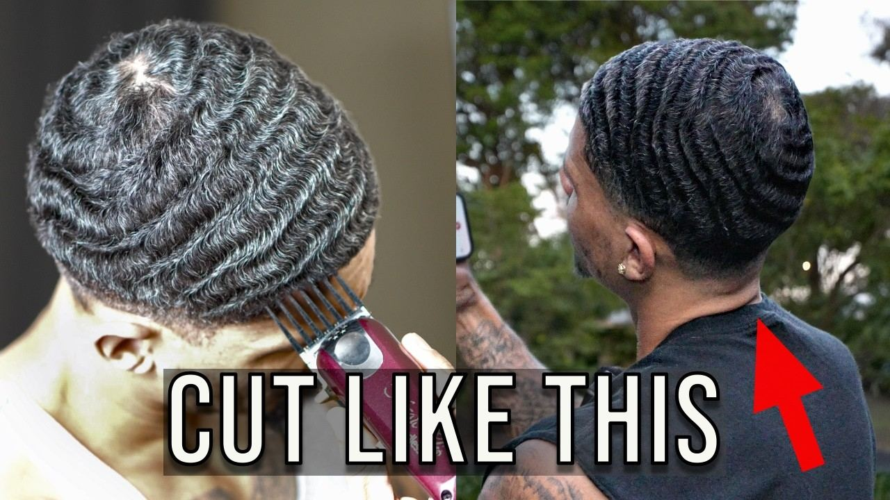

Waves Culture and the Wave Check: Inside the Community That Built This
Every pattern in this guide exists because of a community that taught itself, documented everything, and built a culture with its own rituals, vocabulary, and standards of proof. That culture's most famous ritual is the wave check — the moment the durag comes off on demand and the pattern speaks for itself. Wavy Merch's (@Wavy_Merch) presence in the video below is itself part of the story: creator-wavers who teach the craft to millions. This guide goes inside the culture that built everything else in the Wave Lab.
The wave check: proof, not talk
'Wave check' started as a challenge: someone calls it, the durag comes off, and the pattern is judged on sight — no filters, no preparation, no excuses. It spread from school hallways and barbershops to social media, where it became a genre: the reveal video, the slow untie, the spin for the camera.
Underneath the entertainment is a value system: results over claims. Wave culture respects the work because the work cannot be faked — a connected pattern is weeks of visible evidence, worn on your head. The wave check is simply the culture's audit, and passing one in a room of real wavers remains a genuine honour, because they know exactly what they are looking at and what it cost.
The forums and the teachers
Wave knowledge was crowdsourced before that was a word: barbershop elders first, then forums and YouTube channels where wavers posted routines, product tests, and month-by-month progress with a generosity the culture rarely gets credited for. The angles, methods, and terminology in this entire guide — wolfing, forks, the wash-and-style — were community inventions, refined in public, free to anyone willing to do the work.
That teaching economy still runs the culture. Creator-wavers demonstrate, beginners post progress, elites answer questions. When you learn a method here and later teach it to someone at the mirror, you are not consuming content — you are holding a position in a relay that has been running for decades.
The vocabulary and the standard
Every craft has its language, and waves are no different: spinning, dipping, forks, breaks, connections, the crown, the wolf. Learning the words is learning to see — once you can name a fork, you can fix one; before that, your pattern was just 'kinda off.' The vocabulary is diagnostic equipment disguised as slang.
And the standard the culture holds is simply this: the work shows. Products come and go, patterns rise and fall in fashion, but the community's core bargain has never changed — put in the sessions, tie the durag, respect the process, and your head will carry the receipt. Welcome to the culture. Brush in the right directions, and it will make room for you.
Watch: the cutting tutorial from Wavy Merch — the fresh cut is what every wave check is really judging
Video: “How to Cut 360 Waves Properly (Haircut Tutorial)” by Wavy Merch (@Wavy_Merch) · Watch on YouTube
Shop the gear
Everything in this guide runs on the right gear: a durag that holds compression without slipping, a cap that stays put, and fabric that treats your hair right. The durag.store launch lineup is built to that standard — dual-layer construction, long tails, and stitching made to survive the routine. Join the launch list and use code GOLDSTANDARD for 15% off your first order.
Keep learning
- Styling a Durag With Outfits: Colour, Fabric and Occasion — Intermediate · Styling & Culture
- Choosing Durag Colours: What Works With Your Skin, Hair and Wardrobe — Basic · Styling & Culture
- Custom Print Durags: Designing, Printing, and What to Check Before You Buy — Intermediate · Styling & Culture
Sources: Video — “How to Cut 360 Waves Properly (Haircut Tutorial)” by Wavy Merch (@Wavy_Merch), youtube.com. Guide written by the durag.store Wave Lab.